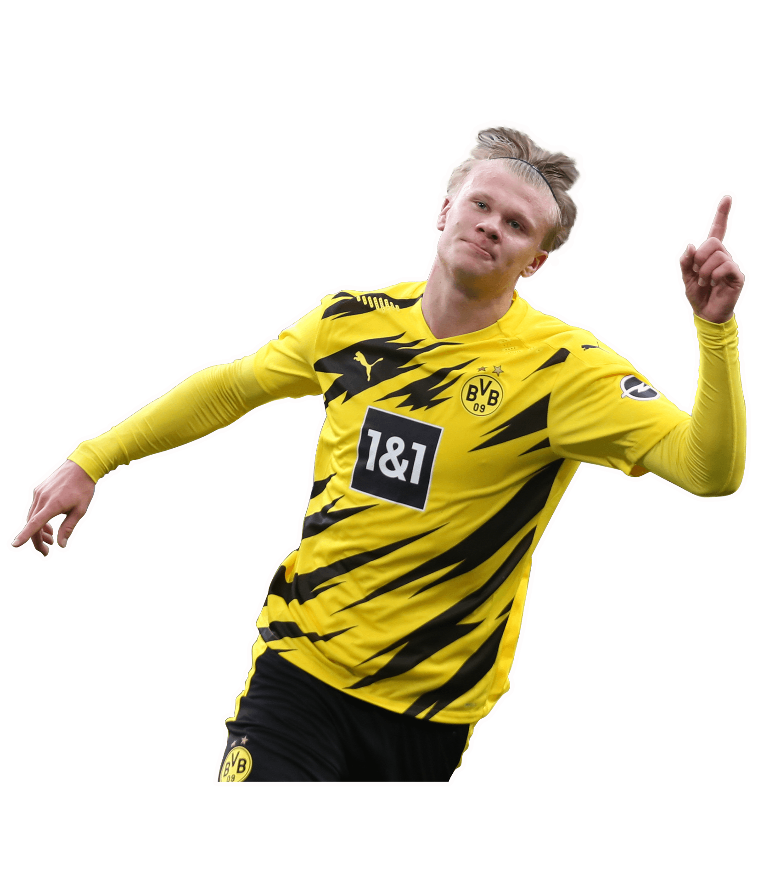
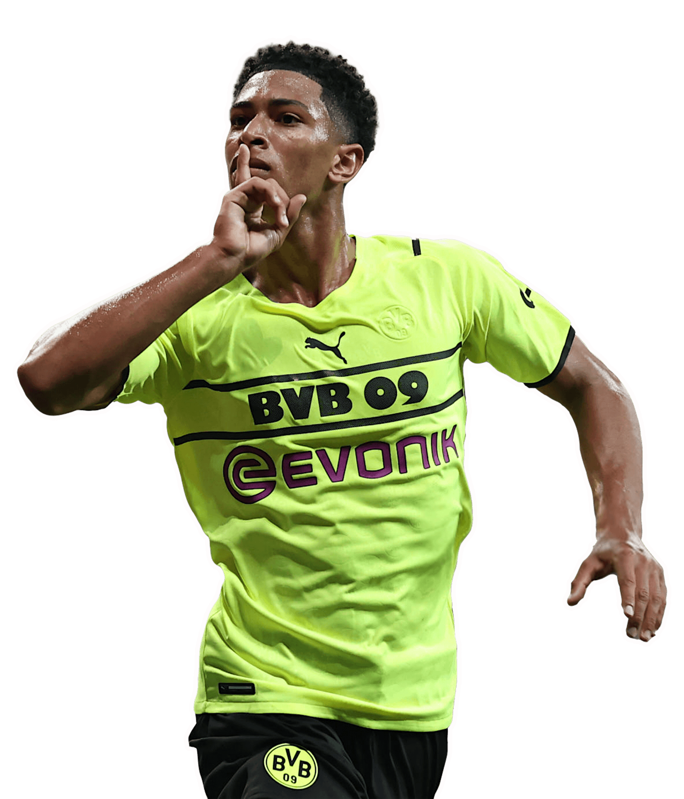
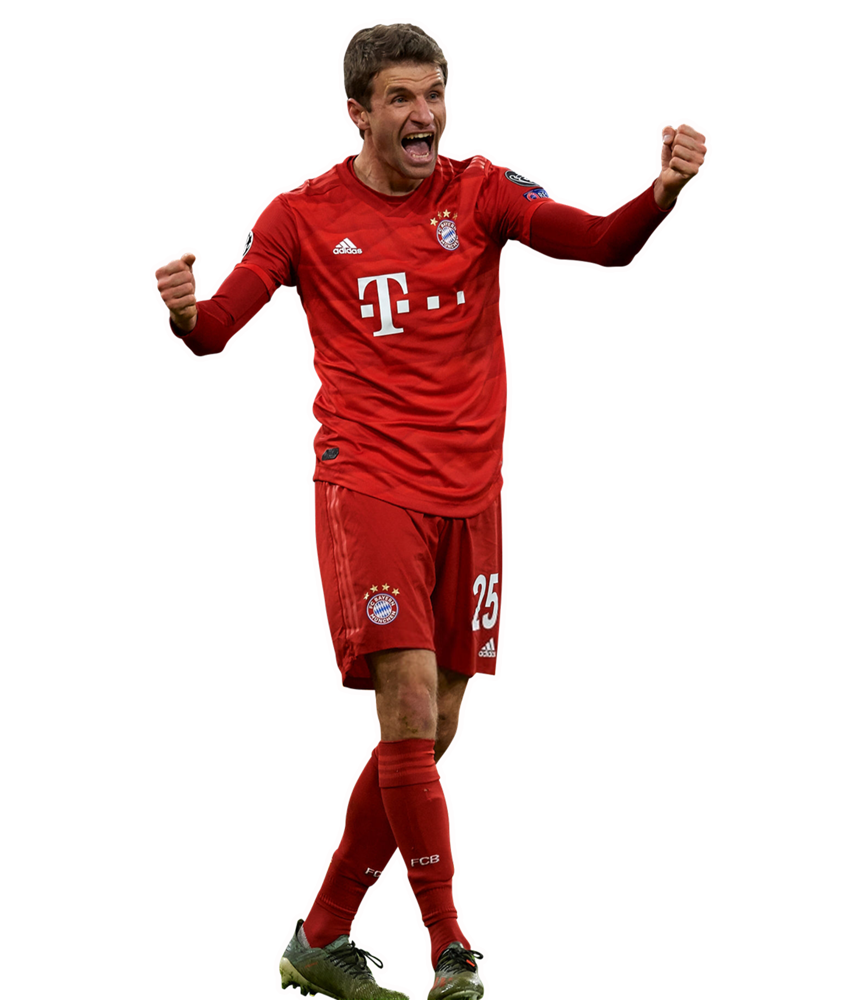
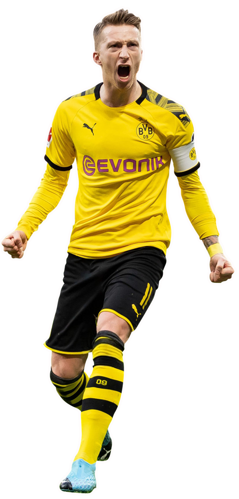
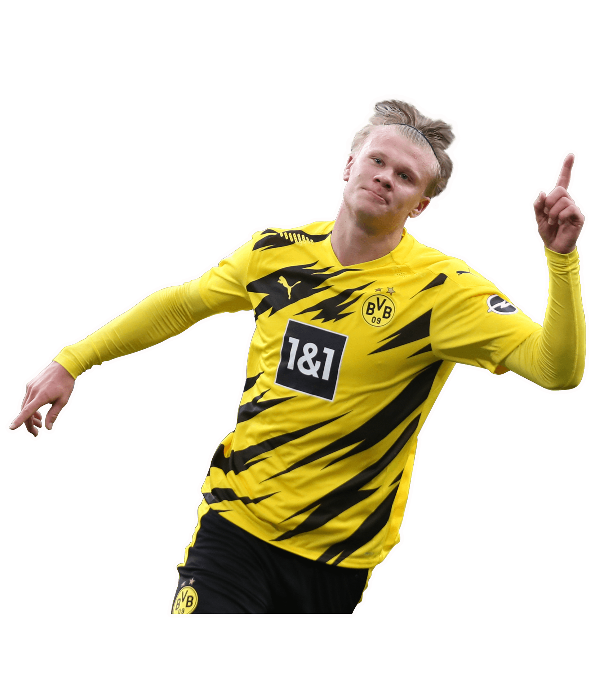
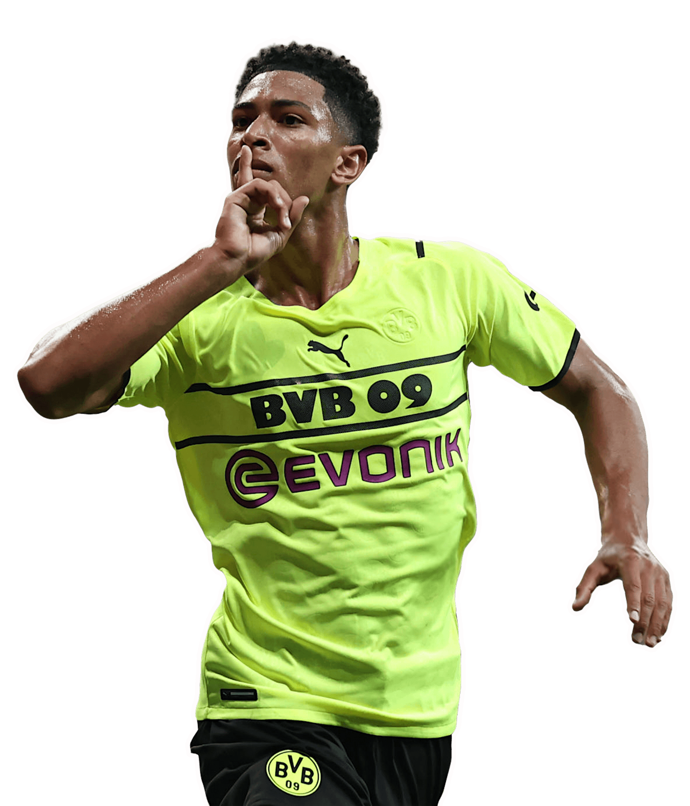
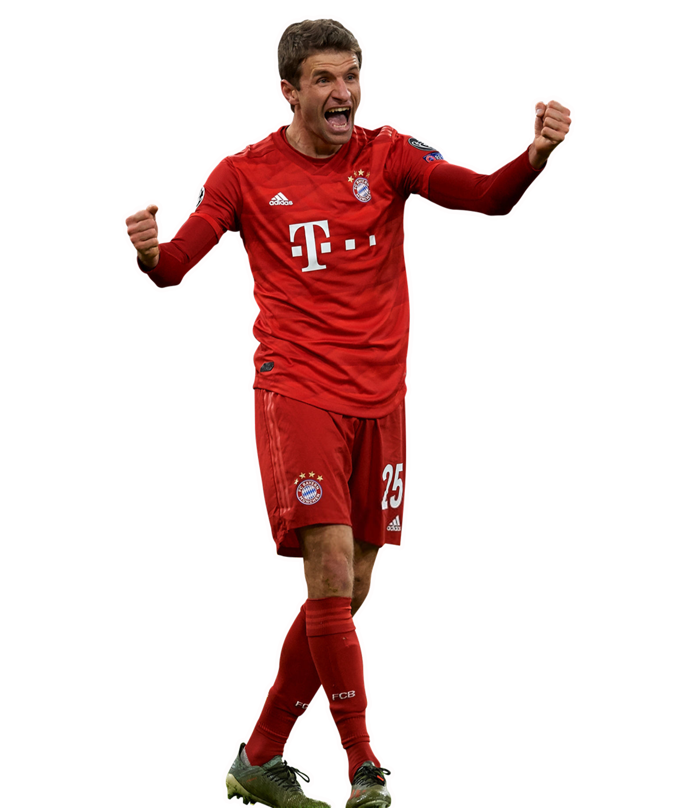
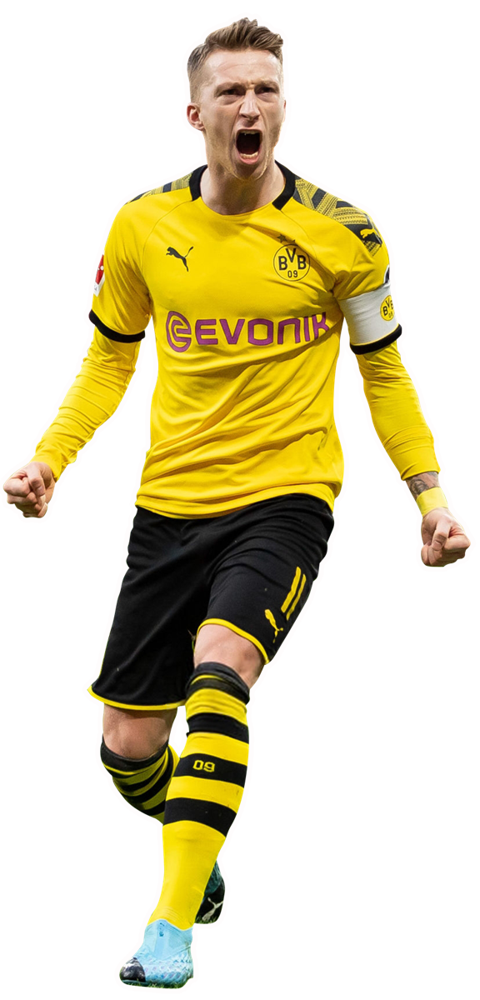
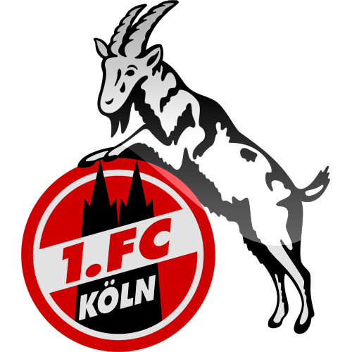
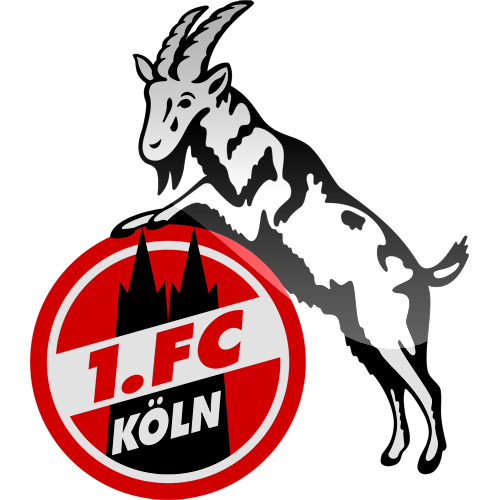

Bundesliga


 



German football leagues had existed long before the establishment of the Bundesliga, in 1898 was the first regional league, Southern German football championship, formed. The top national clubs were invited to become the sixteen founding members of the Bundesliga. These were FC Kaiserslautern, FC Köln, FC Saarbrücken, FC Nürnberg, Meidericher SV, Eintracht Frankfurt, Borussia Dortmund, Eintracht Braunschweig, Karlsruher SC, Hertha BSC Berlin, Preußen Münster, VfB Stuttgart, Hamburger SV, TSV 1860 München, Schalke 04 and Werder Bremen. FC Köln would win by a six points margin and Uwe Seller would be the top scorer with 30 goals for Hamburger.
The 3 most important stadiums in Germany

33
Goals
124
save
17
Assists
17
Own Goals
10
penalties Scored
92
Goals